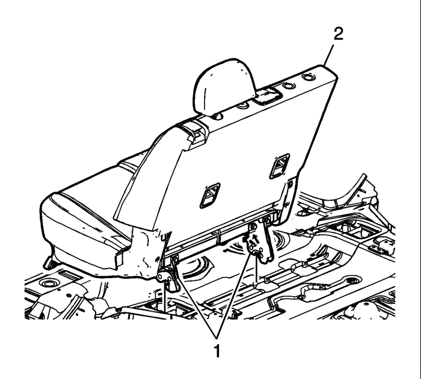

Retirar las cubiertas de acabado del dispositivo elevador del asiento trasero.
Desmontar los pernos del asiento trasero (1)
Abrir la cubierta del compartimento portaobjetos del piso del compartimento trasero y desmontar el aislante de espuma encima de la rueda de repuesto para acceder a los enganches del asiento trasero.

Desbloquear el asiento trasero (2) presionando hacia adelante los botones de cierre situados en la parte interior de los cierres inferiores del asiento trasero.
Montar los 2 pernos de fijación de los asientos (1) en la parte delantera de los dispositivos elevadores del asiento y apretar los pernos 40 N·m (30 lib. pie).